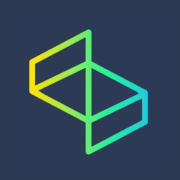

Notizie Terra Terra
üì∞ Un canale TikTok che si propone di offrire una visione originale e alternativa della realt√† che ci circonda, fornendo qualche angolatura diversa e imprevista
Come nasce un papà

üéôÔ∏è Un podcast nel quale racconto la mia esperienza da neo pap√†: Un giorno mi sono svegliato e ho scoperto che sarei diventato pap√†: ecco cos'√® successo nei 9 mesi dopo
Imagine Software

Dai un'occhiata al mio
lavoro
üë®ü誂Äçüíª Sono un software developer ed ho fondato Imagine Software per occuparmi in prima persona di sviluppo software da freelance.